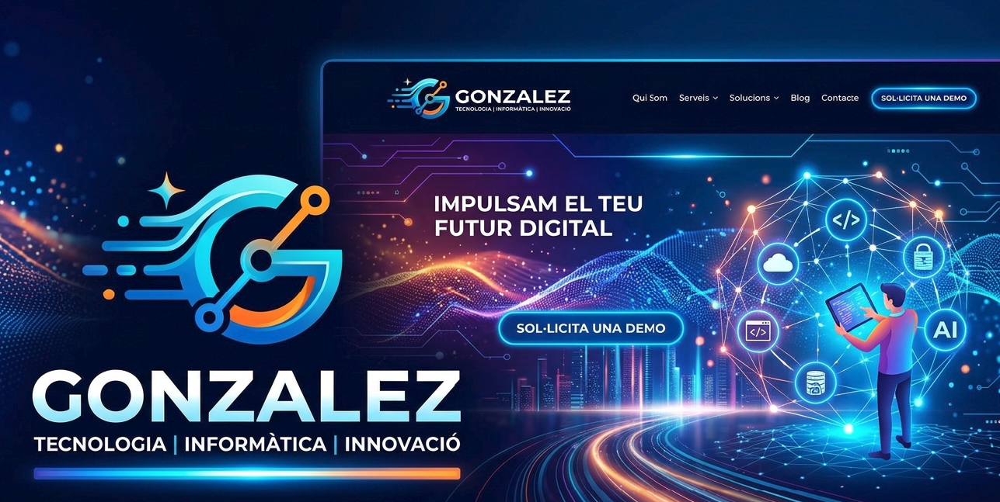

Presentació
Proposta de projectors
El projecte està pensat per ajudar l'IES Eugeni d'Ors a renovar els seus projectors de classe. Actualment els equips de projecció són lents, poc nítids i no permeten un control senzill de les diapositives.
La proposta inclou projectors de qualitat superior amb connexió sense fils, control remot per passar diapositives amb un mando i funcions innovadores de col·laboració digital. Això millora l'experiència d'ensenyament i facilita el treball amb ordinadors i dispositius mòbils.

Proposta de monitors
A més dels projectors, proposem renovar els monitors vells de les aules per models més moderns i amb millor tecnologia. Aquestes pantalles permeten una visualització més clara, una connectivitat més àgil i una experiència més professional per a classes digitals.
- Monitors amb resolució superior i millor fidelitat de colors.
- Connexió HDMI i USB-C per a portàtils i dispositius mòbils.
- Pantalles remotes modernes per als alumnes i els professors.
- Reducció de temps de muntatge i menys fallades de connexió.